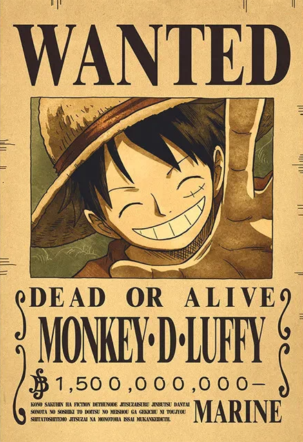

Enciclopédia Visual Premium
Explore o Universo de One Piece
Uma experiência cinematográfica completa com personagens icônicos, tripulações lendárias, frutas do diabo místicas e espadas épicas. Navegue pelo Grande Mundo como nunca antes.
0
Personagens
0
Tripulações
0
Frutas
0
Espadas

Monkey D. Luffy
Capitão dos Piratas do Chapéu de Palha
3.000.000.000
Scroll para explorar
Destaque
Personagens Populares
Os piratas mais procurados e heróis lendários do Grande Mundo
Os Quatro Imperadores
Os Yonko
Os quatro piratas mais poderosos que governam o Novo Mundo
Facções
Grandes Facções
Marinha, Revolucionários e as forças que moldam o mundo
Poderes Místicos
Frutas do Diabo
As frutas místicas que concedem poderes extraordinários
Armas Lendárias
Espadas Épicas
As espadas mais poderosas e lendárias do mundo de One Piece
Tripulações
Tripulações Lendárias
As tripulações mais famosas e poderosas dos mares
Comece sua jornada
Explore o Universo Completo de One Piece
Milhares de personagens, tripulações, frutas do diabo e muito mais esperam por você.